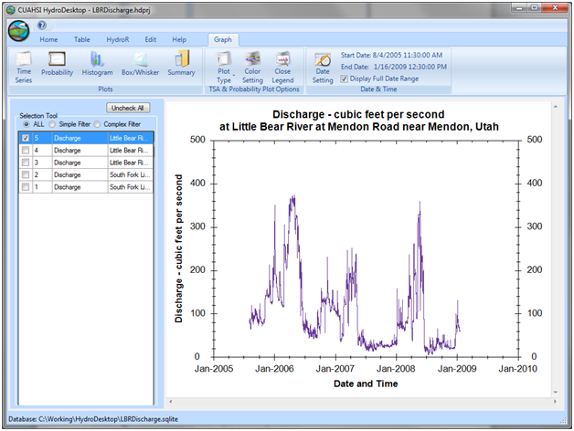
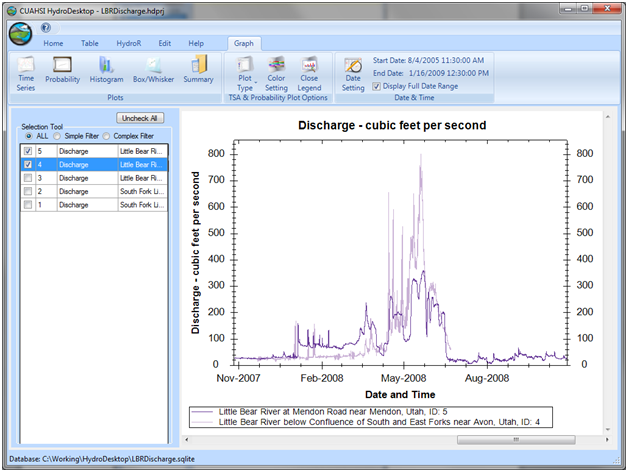

Visualizing Data in the Graph View
Once you have discovered and downloaded some time series data into HydroDesktop, you can use the following steps to begin visualizing those data using the Graph View extension:
- Make sure the Graph View is active by clicking on the “Graph” tab at the top of the HydroDesktop window.
- Select a data series by clicking on the check box to the left of any of the data series in the HydroDesktop Series Selection Tool. You will notice that the Graph View creates a plot of the selected series.

- You can visualize multiple series at once by selecting multiple series on the series selection tool. You will notice that a legend appears at the bottom of the plot when more than one series is selected.
